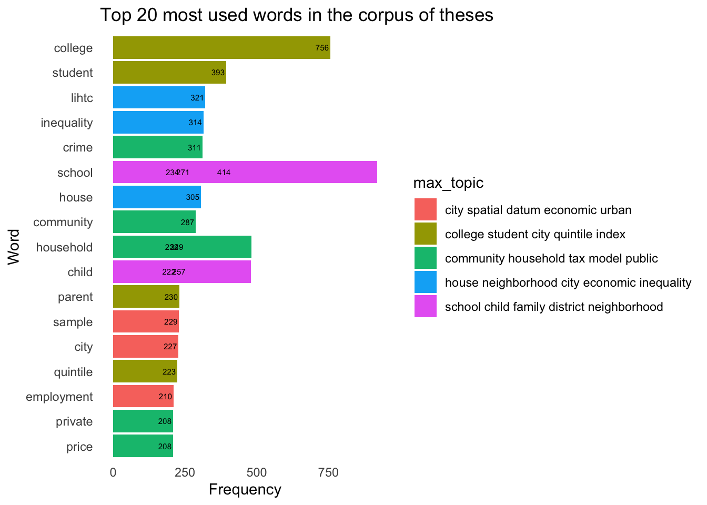

In this notebook we will work with a set of full papers in PDF format and their metadata obtained from Web of Science. The full papers are stored in data/collection/PDFs/ and the metadata is available in data/collection/savedrecs_wdoi.csv of this repository.
If you want to run the code from this notebook on your computer, please follow our setup instructions.
The same workflow applies to data obtained from other platforms such as Scopus. Note that variable names need to be adjusted accordingly.
Pre-processing
In this section, we demonstrate a few relevant pre-processing tasks for the data. The pre-processing tasks include: extracting text from PDF files, combining text data with metadata, subsetting and cleaning the data.
Task 1: Extract text from PDF files
Most journal articles are available in PDF format, which is not well suited for quantitative text analysis. Therefore, a common pre-processing task is the extraction of text from PDFs an its storage in a more structured form suitable for analysis. As tools for PDF processing are scarce in the R ecosystem, we rely on Python for this task. The text extraction can be carried out in Python directly or from R via the reticulate package. We adopt the latter approach.
The following code chunk will create a Python environment myenv and install the Python library PyMuPDF for extracting text from PDF files. In subsequent runs, this code chunk will automatically detect the installed environment. The Python script extract-text-from-pdf.py is used to extract text from PDF files.
# Set up and use Python for PDF text extractionvirtualenv_create(envname ="myenv", python =install_python())
The following code block will extract text from PDF files and structure them into an R data frame.
# Specify the location of the datadata_root <-"data/collection/PDFs"# Get PDF file pathspdf_paths <-list.files(data_root, full.names =TRUE, pattern ="*.pdf$")# Extract text from PDFs with the Python function `convert_pdf()`text <-convert_pdf(pdf_paths) |>unlist()# Create data frame with full text datadoc_names <-list.files(data_root, pattern ="*.pdf")text_df <-tibble(id =str_sub(doc_names, 1, -5L), text) |>mutate(text =str_replace_all(text, "^[0-9]*$", ""))
Task 2: Combine text data with metadata
Next, we combine the metadata directly extracted from the paper database with the full text extracted from PDF files, using the id column to join them.
metadata <-read.csv("data/collection/savedrecs_wdoi.csv", header =TRUE, sep =",")# take only the last name of first authormetadata$refnames <-sapply(strsplit(metadata$Author.Full.Names, " "), function(x) x[1])metadata$ref <-paste(metadata$refnames, metadata$Year, sep ="")# uncomment the line below and load the text data from file if needed# text_df <- read_csv(file = "data/text_df.csv")# join the metadata with the text datadata <- metadata |>left_join(text_df, by =c("id"="id"))
Task 3: Subset and clean the data
We only need the columns id, Keywords.Plus, Year, Cited.Reference.Count, and ref from the data frame. We will also rename some columns for better readability.
Before looking into we want to gain an overview of the metadata. We will look at the distribution of the number of papers over the years and identify the most cited papers. We do so by asking the following questions:
Question 1: What is the distribution of number of papers over the years and when were the most cited papers published?
To answer this question, we plot the number of papers by year overlayed with high-citation papers. Note the use of two y axes. We can see that the number of papers has been increasing over the years, with most high-citation papers published in recent years.
Listing 1: Number of papers per year
# count the number of papers by yearmeta_basics_year <- meta_basics %>%group_by(Year) %>%summarise(count =n()) %>%arrange(desc(count))# get the top 10 high-citation papersmeta_basics_cites <- meta_basics %>%arrange(desc(Cites)) %>%head(10)# add the number of high-citation papers to the plot with dual y axisggplot(meta_basics_year, aes(x = Year, y = count)) +geom_bar(stat ="identity", fill ="steelblue") +labs(title ="Number of papers by year", x ="Year") +geom_text_repel(data = meta_basics_cites, aes(x = Year, y = Cites/10, label = ref), vjust =-0.5, color ="#feb237") +geom_point(data = meta_basics_cites, aes(x = Year, y = Cites/10, group =1), color ="red") +scale_y_continuous(breaks =seq(0, 100, 1), name ="Number of papers", sec.axis =sec_axis(~.*10, name ="High-citation papers")) +theme_minimal()
Listing 2: Number of papers per year
# save the plot# ggsave("output/number_of_papers_by_year_high_citations.png")
Question 2: Which are the top 10 most cited papers between 2017-2023?
We might also want to focus on the most cited papers, assuming that they are the most influential.
# get the high-citation papers in recent 5 yearspapers_cites_recent <- meta_basics %>%filter(Year >=2017) %>%arrange(desc(Cites)) %>%head(10)# get the titles of high-citation papers in recent 5 yearspapers_cites_recent_titles <- papers_cites_recent %>%left_join(metadata, by ="id") %>%select(id, Article.Title)# save it as excelwrite.csv(papers_cites_recent_titles, "output/high_citation_papers_recent_5_years.csv")papers_cites_recent_titles
id
1 WOS:000681232100001
2 WOS:000722167700007
3 WOS:000691516200004
4 WOS:000419722300001
5 WOS:000702393800014
6 WOS:000454132900009
7 WOS:000658450100001
8 WOS:000602322700001
9 WOS:000482232300001
10 WOS:000518403700010
Article.Title
1 Socio-economic segregation in European cities. A comparative study of Brussels, Copenhagen, Amsterdam, Oslo and Stockholm
2 Proximate sources of growth in neighborhood income segregation: Class-selective migration versus in sita change
3 Income segregation's impact on local public expenditures: Evidence from municipalities and school districts, 1980-2010
4 Income Segregation between School Districts and Inequality in Students' Achievement
5 Discovering income-economic segregation patterns: A residential-mobility embedding approach
6 Civic Life in the Divided Metropolis: Social Capital, Collective Action, and Residential Income Segregation
7 Exploring the global and local patterns of income segregation in Toronto, Canada: A multilevel multigroup modeling approach
8 On the link between rail transit and spatial income segregation
9 Building Inequality: Housing Segregation and Income Segregation
10 Technology, talent and economic segregation in cities
Mapping case study locations
Objectives:
Introduce different types of mapping for visualising paper count in the literature database.
Discuss an optimal way to collect data for mapping.
Provide an automatic mapping method (abstract typology of country boundary) for mapping.
Input:
manual
extracting location from title
extracting location from abstract
if multiple locations are mentioned, multiple records are created
Output:
interactive map with Leaflet
tiled grid map with template available for QGIS as well
Preparing the data
Location information is normally presented in the text. The computational method is to use the world cities database to conduct a text match from the abstract or full text. However, the reality is there might be spelled in different way. Thus, it is recommended to collect them or, at least, manually check the accuracy of data collection.
options: X_POSSIBLE_NAMES=lng Y_POSSIBLE_NAMES=lat
Reading layer `map' from data source
`/Users/claudiuforgaci/Projects/SLRbanism/data/map.csv' using driver `CSV'
Simple feature collection with 38 features and 5 fields
Geometry type: POINT
Dimension: XY
Bounding box: xmin: -117.134 ymin: -36.85102 xmax: 174.7679 ymax: 53.80327
Geodetic CRS: WGS 84
1.2 Visualising the data
1. Create a interactive maps with the package mapview
mapview(mapping)
2. Static map
Plot the location of studied area on top of the world map (countries’ boundary).
Load the world map, which will be the base map for the following mapping.
countries_bound <-geojson_sf("data/map_basis/WB_countries_Admin0_10m/WB_countries_Admin0_10m_small.geojson")# If you wish to plot the boundaries of countries on the canvasggplot(countries_bound) +geom_sf(aes(fill = FORMAL_EN)) +guides(fill =guide_none())
# Save the plotggsave("output/direct_mapping.png")
Saving 7 x 5 in image
3. Tiled grid map
Summarise the number of papers within different countries
Using the points to join with the countries’ boundary
country_tiled_frame <-geojson_sf("data/map_basis/Tile-Grid-Map-Cleaned.geojson")countries_bound <-st_make_valid(countries_bound)summary <-st_join(mapping, countries_bound, join = st_within, left =TRUE)
Because the tiled grid map does not contain all the countries in the world, we need to check which countries (values of WB_A3) are not included in the column alpha-3 of country_tiled_frame.
Simple feature collection with 1 feature and 3 fields
Geometry type: POINT
Dimension: XY
Bounding box: xmin: 35.22613 ymin: 31.77324 xmax: 35.22613 ymax: 31.77324
Geodetic CRS: WGS 84
Geographical.Area FORMAL_EN WB_A3
1 Downtown Jerusalem, Israeli West Bank and Gaza PSE
geometry
1 POINT (35.22613 31.77324)
We can see that the geographical area “Downtown Jerusalem, Israeli”, based on it’s coordinates, is categorised as “West Bank and Gaza”. However, based on the text of the original paper, regardless of the political status, it should be categorised as “Israel”.
In this case, we just recode it to Israel. Specifically, we change the value of WB_A3 from "PSE" to "ISR".
Simple feature collection with 0 features and 3 fields
Bounding box: xmin: NA ymin: NA xmax: NA ymax: NA
Geodetic CRS: WGS 84
[1] Geographical.Area FORMAL_EN WB_A3 geometry
<0 rows> (or 0-length row.names)
Summary the number of papers within different countries:
Read the prepared geojson into spatial data frame:
# join the summary_2 to country_tiled_frame based on the column `WB_A3` (left), and `alpha-3` (right)country_tiled_frame <-left_join(country_tiled_frame, summary_2, by =c("alpha-3"="WB_A3"))# fill the NA with 0 in the column "n"country_tiled_frame$n[is.na(country_tiled_frame$n)] <-0
ggplot(country_tiled_frame) +geom_sf(aes(fill = n), color =NA) +geom_label(data = country_tiled_frame[country_tiled_frame$n !=0,], aes(x= coord_x, y = coord_y, label =`alpha-2`), label.size =NA, fill =NA, color ="grey") +scale_fill_cvi_c("cvi_greens") +theme_minimal() +theme(legend.position ="bottom") +labs(title ="Number of papers within different countries") +theme_void()
ggsave("output/tiled_grid_map.jpg", width =10, height =8, units ="in", dpi =300)
Keyword analysis (wordcloud)
Looking at the keywords is a quick way to understand the main topics of the literature. We will create a word cloud for all the keywords and for each time period.
Question 1: What are the main topics in the literature as seen in the keywords?
We will create a word cloud to visualise the most frequent keywords in the literature. We start by removing rows with missing keyword values, as well as stopwords, numbers, extra white spaces and punctuation from the keywords. We then create a document term matrix and calculate the frequency of each word.
# remove the rows with NA or empty in the column "Keywords"df_kw <- data[!is.na(data$Keywords) & data$Keywords !="", ]# reset the row indexrownames(df_kw) <-NULL# create a corpuscorpus <-Corpus(VectorSource(df_kw$Keywords))# convert the corpus to lower casecorpus <-tm_map(corpus, tolower)
Warning in tm_map.SimpleCorpus(corpus, tolower): transformation drops documents
Warning in tm_map.SimpleCorpus(corpus, removeWords, stop_words): transformation
drops documents
# create a document term matrixdtm <-TermDocumentMatrix(corpus)# convert the document term matrix to a matrixm <-as.matrix(dtm)# calculate the frequency of each wordwords <-sort(rowSums(m), decreasing =TRUE)# create a data frame with two columns: word and frequencydfkw_feq <-data.frame(word =names(words), freq = words)# delete intermedia variables# rm(corpus, dtm, m, words)
Using the keyword frequencies, we can create a word cloud to visualise the most frequent keywords in the literature.
png("output/wordcloud_total.png", width=6,height=5, units='in', res=300)set.seed(1234) # for reproducibility wordcloud(words = dfkw_feq$word, freq = dfkw_feq$freq, min.freq =2, max.words=200, random.order=FALSE, rot.per=0.35, colors=brewer.pal(8, "Dark2"))# add a titletitle(main ="Word Cloud of Keywords")dev.off()
quartz_off_screen
2
Question 2: What are the main topics in the literature in different time periods as seen in the keywords?
Looking at different time periods can help us understand the evolution of the literature. We will divide the time range into three periods: before 2000, 2000-2010, and after 2010.
time_range <-range(df_kw$Publication.Year)# Divide the time range into 3 periods: before 2000, 2000-2010, and after 2010periods <-cut(df_kw$Year, breaks =c(time_range[1]-1, 2000, 2010, time_range[2]), labels =c("before 2000", "2000-2010", "after 2010"))df_kw$periods <- periods
Generate the word cloud for each time period.
for (i inunique(df_kw$periods)) { dfkw_feq <-data.frame() corpus <-Corpus(VectorSource(df_kw[df_kw$periods == i, ]$Keywords)) corpus <-tm_map(corpus, tolower) corpus <-tm_map(corpus, removePunctuation) corpus <-tm_map(corpus, removeNumbers) corpus <-tm_map(corpus, stripWhitespace) corpus <-tm_map(corpus, removeWords, stop_words) dtm <-TermDocumentMatrix(corpus) m <-as.matrix(dtm) words <-sort(rowSums(m), decreasing =TRUE) dfkw_feq <-data.frame(word =names(words), freq = words)png(paste("output/wordcloud_", i, ".png", sep =""), width=6, height=5, units='in', res=300)set.seed(1234) # for reproducibility wordcloud(words = dfkw_feq$word, freq = dfkw_feq$freq, min.freq =2, max.words=200, random.order=FALSE, rot.per=0.35, colors=brewer.pal(8, "Dark2"))title(main =paste("Word Cloud of Keywords in", i))dev.off()}
Text mining
Text mining is a powerful tool for extracting insights from unstructured text data. In this section, we will demonstrate how to perform text mining on the full text of the papers extracted from PDFs. We start by splitting the text into words, a process called tokenisation, and then proceed with word context, word embeddings and topic modelling.
words <-unnest_tokens(text_df, word, text) |>filter(is.na(readr::parse_number(word))) |># Remove numbersanti_join(tidytext::stop_words, by ="word") |># Remove English stop words# anti_join(custom_stop_words, by = "word") |> # Remove custom stop words dplyr::filter(nchar(word) >3) # remove words of max. 3 characters
words_count <- words |>count(word) |>arrange(desc(n))words_count
# A tibble: 18,158 × 2
word n
<chr> <int>
1 income 8795
2 segregation 6941
3 economic 2010
4 housing 1907
5 urban 1822
6 neighborhood 1715
7 inequality 1701
8 neighborhoods 1639
9 data 1563
10 spatial 1469
# ℹ 18,148 more rows
Words in context: sentences around a specific word
We can extract sentences around a specific word of interest to understand the context in which it is used.
# Define the word of interestword_of_interest <-"income"# Extract sentences around the word of interestsentences <- text_df |>unnest_tokens(sentence, text, token ="sentences") |>filter(str_detect(sentence, word_of_interest)) |>select(sentence)# Display the first few sentenceshead(pull(sentences), 10)
Note the high occurrence of the hyphenated “low-income” in the sentences. This is a common issue in text mining, where hyphenated words are treated as separate words. We can address this in two ways: by replacing hyphens with underscores to treat them as a single word (e.g., “low_income”) or by re-running the analysis with “bigrams” as tokens instead of “words”.
Words in context: word embeddings
Word embeddings are dense vector representations of words that capture semantic relationships between words. We use word embeddings to find words that are similar to a word of interest such as “income”? As a rule of thumb, the dataset should have above 1 million tokens (words in this case) for reliable results. The following code chunks demonstrate the steps to calculate word embeddings.
# A tibble: 508,274 × 3
item1 item2 pmi
<chr> <chr> <dbl>
1 economic international 0.641
2 review international 2.31
3 vol international 1.63
4 4 international -1.36
5 doi international 2.51
6 the international -0.496
7 of international 0.517
8 income international -1.45
9 segregation international -0.471
10 by international -2.00
# ℹ 508,264 more rows
The following code calculates the word vectors using the singular value decomposition (SVD) method.
# A tibble: 1,626 × 2
item1 value
<chr> <dbl>
1 income 1
2 incomes 0.373
3 come 0.311
4 segregation 0.289
5 parent 0.212
6 watson 0.204
7 poorest 0.194
8 lowest 0.191
9 cumulative 0.189
10 hood 0.189
# ℹ 1,616 more rows
Output: A bar chart with top words related to the word of interest
# Words excluded iteratively while creating the LDA model# Custom stop words may contain the words used in the literature search querycustom_stop_words <-tibble(word =c("income","incomes","segregation","neighbourhood","neighborhood","21","11"))tidy_word_vectors %>%nearest_neighbors("income") %>%filter(!item1 %in% custom_stop_words$word) %>%slice_max(value, n =10) %>%ggplot(aes(reorder(item1, value), value)) +geom_col() +coord_flip() +labs(x =NULL, y ="PMI", title ="Top words related to 'income'")
Output: A wordcloud with top words related to the word of interest
Warning in wordcloud(words = top_10_words$item1, freq = top_10_words$freq, :
occupational could not be fit on page. It will not be plotted.
# add a titletitle(main ="Word Cloud of Keywords")
#dev.off()
Topic model
We use an LDA topic model to identify dominant topics in a corpus of papers. We start by pre-processing the data and splitting it into words.
# Words excluded iteratively while creating the LDA model# Custom stop words may contain the words used in the literature search querycustom_stop_words <-tibble(word =c("income", "incomes", "segregation","neighbourhood", "neighborhood"))words <- data |>select(id, text, "year"=`Publication.Year`) |>unnest_tokens(output = word, input = text) |># remove punctuation, make lower caseanti_join(tidytext::stop_words, by ="word") |># remove stop wordsanti_join(custom_stop_words, by ="word") |># remove custom stop wordsmutate(word =lemmatize_words(word)) |># lemmatise wordsfilter(nchar(word) >=3) # keep words longer than 3 letters
The LDA model requires a Document Term Matrix (DTM) as input.
dtm <- words |>count(id, word, sort =TRUE) |>filter(n >5) |># minimum term frequency 5cast_dtm(id, word, n)
We choose the value for the k hyperparameter either empirically or qualitatively.
# Set k empirically# # This takes around 10 minutes to run and results in a value between 25 and 30# # which is rather difficult to interpret# # This might be useful and easy to use if combined with hierarchical representation# # of topics in a dendrogram - still to be done# result <- FindTopicsNumber(# dtm,# topics = seq(from = 2, to = 30, by = 1),# metrics = c("CaoJuan2009", "Deveaud2014"),# method = "Gibbs",# control = list(seed = 2023),# verbose = TRUE)# k = result$topic[which.max(result$Deveaud2014 - result$CaoJuan2009)]# Set k qualitatively, based on the researcher's understanding of the literaturek =5
We fit the LDA model and extract topic distributions over terms represented by the \(\beta\) statistic and the topic document distributions over topics represented by the \(\theta\) statistic. For each topic, we also generate a pseudo-name from the top 5 words.
# Fit LDA modellda <-LDA(dtm, k = k, method="Gibbs",control =list(seed =2023, iter =500, verbose =100))
K = 5; V = 2816; M = 55
Sampling 500 iterations!
Iteration 100 ...
Iteration 200 ...
Iteration 300 ...
Iteration 400 ...
Iteration 500 ...
Gibbs sampling completed!
# Extract beta and theta statistics from LDA modelbeta <-posterior(lda)$termstheta <-posterior(lda)$topics # Add pseudo-names to topics based on the top 5 words in each topictopic_names <-c()n_words <-5for (i in1:nrow(beta)) { name <-paste(names(head(sort(beta[i, ], decreasing =TRUE), n_words)), collapse =" ") topic_names <-c(topic_names, name)}
Listing 3: Promt generated from topic model parameters
keywords <-vector(length = k)for (i in1:k) { keywords[i] <-paste0("- The words for Topic ", i, " are: ", topic_names[i], ".\n")}cat(paste0("I have ", k, " topics, each described by ", n_words, " words. The keywords are as follows:\n"), keywords, "How would you name these topics? Use maximum two words to name the topics and provide a one-sentence description for each.", sep ="")
I have 5 topics, each described by 5 words. The keywords are as follows:
- The words for Topic 1 are: college student city quintile index.
- The words for Topic 2 are: house neighborhood city economic inequality.
- The words for Topic 3 are: school child family district neighborhood.
- The words for Topic 4 are: city spatial datum economic urban.
- The words for Topic 5 are: community household tax model public.
How would you name these topics? Use maximum two words to name the topics and provide a one-sentence description for each.
Topics across the corpus
Output: Bar charts showing top words in the corpus and in each topic
terms <-as.data.frame(posterior(lda)$terms)rownames(terms) <- topic_namesterms <- terms |>mutate(topic =rownames(terms)) |>pivot_longer(-topic,names_to ="term",values_to ="prob") |>group_by(term) |>mutate(max_topic = topic[which.max(prob)]) |>filter(topic == max_topic) |>ungroup()words_topics <- words |>left_join(terms, by =c("word"="term"))top_terms <- words |>group_by(id) |>count(word, sort =TRUE) |>ungroup() |>slice_max(n, n =20)top_terms |>left_join(terms, by =c("word"="term")) |>ggplot(aes(reorder(word, n), n)) +geom_col(aes(fill = max_topic)) +geom_text(aes(label = n), size =2, hjust =1.1) +coord_flip() +xlab("Word") +ylab("Frequency") +labs(title =paste0("Top ", 20, " most used words in the corpus of theses")) +theme_minimal() +theme(panel.grid =element_blank())

# Function to approximate the distance between topicssvd_tsne <-function(x)tsne(svd(x)$u)# Convert DTM into JSON required by the LDAvis packagejson <-createJSON(phi = beta,theta = theta,doc.length =rowSums(as.matrix(dtm)),vocab =colnames(dtm),term.frequency =colSums(as.matrix(dtm)),mds.method = svd_tsne,plot.opts =list(xlab ="", ylab =""))
Epoch: Iteration #1000 error is: 0.110464296023228
# Visualise topics model with LDAvisLDAvis::serVis(json)
Loading required namespace: servr
Evolution of topics
Output: Plots showing the change in relative importance of topics and top words over the years.
topic_prop_per_year <- thetacolnames(topic_prop_per_year) <- topic_namesviz_df_with_year <-pivot_longer(data =data.frame(topic_prop_per_year,document =factor(str_sub(rownames(topic_prop_per_year), 1, 20)),check.names =FALSE),cols =-document,names_to ="topic",values_to ="value") |>left_join(mutate(data, id =as.factor(id), "year"=`Publication.Year`), by =c("document"="id"))# Plot topic proportions per yearviz_df_with_year |>ggplot(aes(x =factor(year), y = value, fill = topic)) +geom_bar(stat ="identity", position ="fill") +scale_fill_viridis_d(name ="Topics") +xlab("Publication year") +ylab("Proportion of topics") +labs(title ="Topic proportions per year")